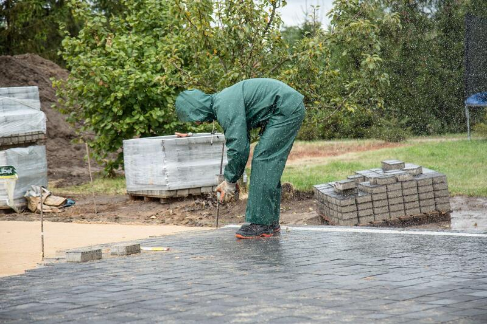
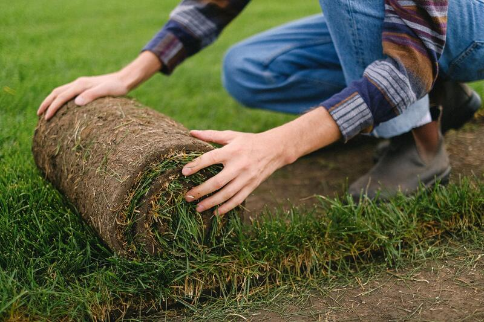
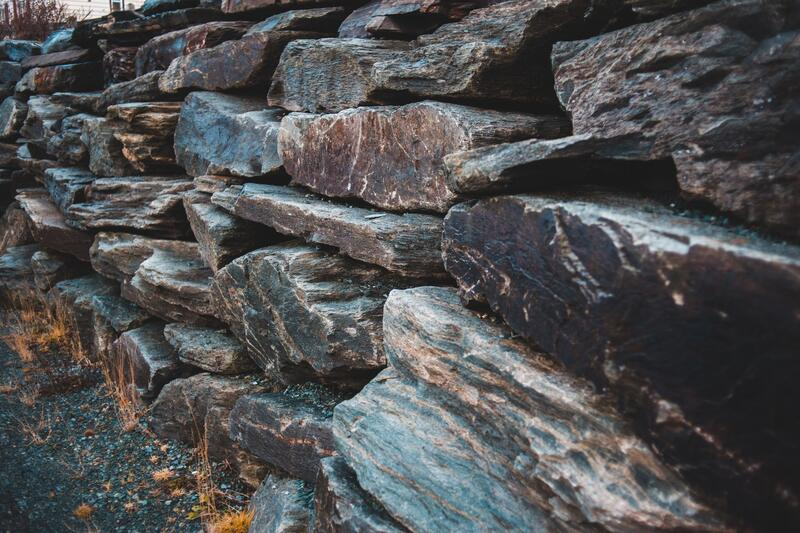
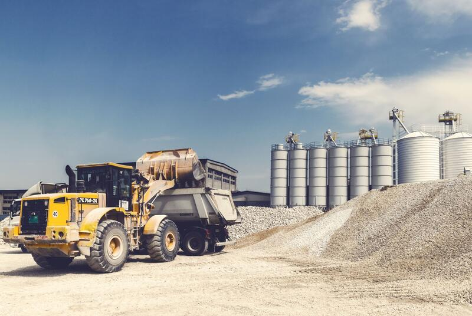
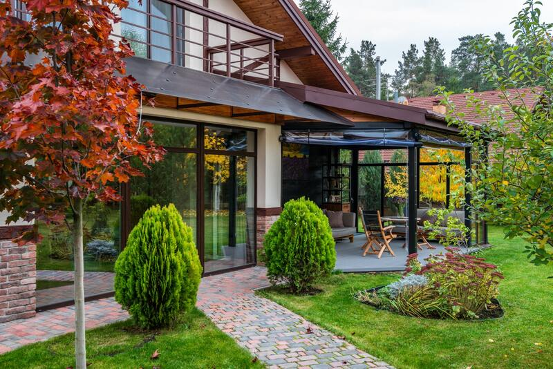
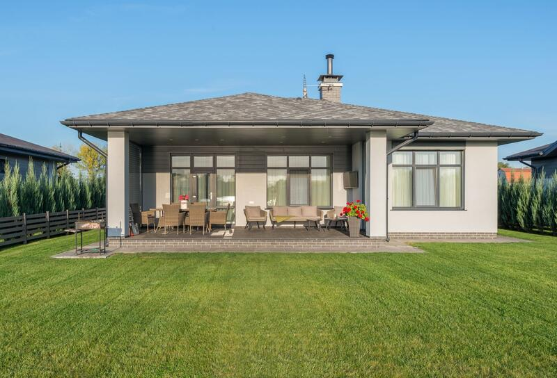
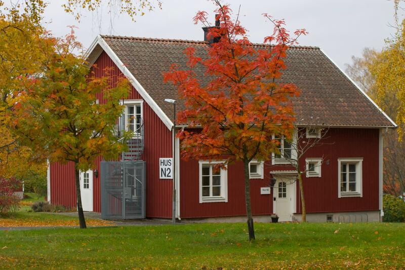

Schaktning & markarbeten
Schaktning inför bygge, grundläggning och gjutning, borttagning av stora stenar och lättare skogsröjning. Vi återfyller och packar ordentligt så att ingenting sätter sig efteråt.


Vi tar hand om hela kedjan – schaktning, dränering, plattor, murar, altaner och trädgård. En kontakt, egna maskiner och folk som kan sitt hantverk.
Vi är ett företag baserat i Veddige men arbetar i hela Varberg, Kungsbacka och Göteborg med omnejd. Vi åtar oss alla typer av gräv-, mark-, trädgårds- och byggtjänster.
Eftersom vi både gräver, kör, bygger och anlägger slipper du samordna flera entreprenörer. Du får en offert uppdelad per arbetsmoment och vet vad som ingår innan vi börjar.


Ett enskilt moment eller hela tomten – vi anpassar arbetet efter markdjup, stenighet och jordtyp, som varierar mycket här i Halland.
Schaktning inför bygge, grundläggning och gjutning, borttagning av stora stenar och lättare skogsröjning. Vi återfyller och packar ordentligt så att ingenting sätter sig efteråt.
Dränering runt husgrunden och på tomten. Vi gräver, lägger rör och makadam, ansluter och återställer – så att fukten hålls borta från huset i många år framåt.

Uppfarter, parkeringsytor, gångar och uteplatser. Ett stabilt underarbete är det som avgör hur ytan ser ut om tio år – därför lägger vi lika mycket tid under plattorna som på dem.

Nya murar och upprustning av befintliga – stödmurar, kantmurar och murar i natursten som tar upp nivåskillnader på tomten.

Utbildade snickare bygger altaner, garage och tillbyggnader och hjälper till med renoveringar. Markarbetet och bygget hänger ihop – hos oss sköts båda av samma lag.

Vill du ha hjälp att röja, anlägga eller planera din trädgård? Vi tar allt från slyröjning och häckklippning till nya rabatter, gräsmattor och löpande skötsel.

Matjord, grus, makadam och sand levereras till rätt plats – och schaktmassor forslas bort med rätt dokumentation. Egen lastbil gör att vi inte behöver vänta på någon annan.

Inga överraskningar på slutfakturan. Du vet vad som ska göras, i vilken ordning och vad det kostar.
Ring, mejla eller skicka formuläret. Beskriv jobbet – bilder hjälper.
Vi går igenom tomten, markförhållanden och dina önskemål.
Du får en tydlig offert uppdelad per arbetsmoment, med ROT/RUT där det gäller.
Samma lag från schakt till slutfinish. Vi städar upp efter oss.
Uppfarter, uteplatser, murar, altaner och trädgårdar runt om i Halland och Göteborgsområdet.


Fler bilder från färdiga projekt finns på referenssidan.
Alla referenser
Vi utgår från Veddige och jobbar i hela Varberg, Kungsbacka och Göteborg med omnejd. Större jobb tar vi gärna längre bort också – hör av dig.
Beskriv kort vad du vill ha gjort så återkommer vi med förslag på upplägg och en offert. Det kostar ingenting att fråga.